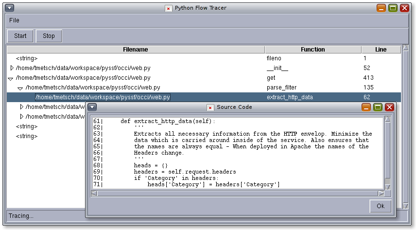
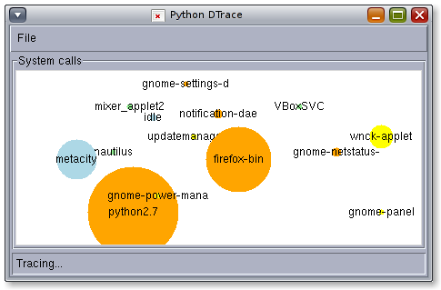
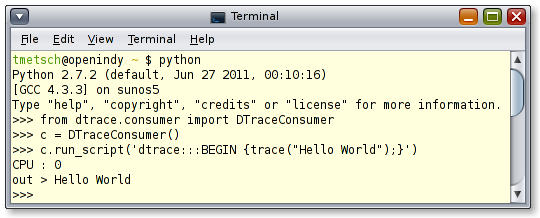
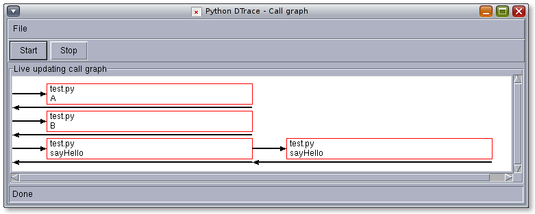

A
Python DTrace consumer using libdtrace - Now Python can be used as DTrace Provider and Consumer...
Download
You can download this project in either zip or tar formats.
You can also clone the project with Git by running:
$ git clone git://github.com/tmetsch/python-dtrace
The project is also hosted on pypi and can be installed using pip or easy_install 'python-dtrace'.
Documentation
Please review the README file on GitHub and have a look at the examples in the examples folder.
Screenshots
Several examples are demoed in little scripts in the /examples folder. But you can do way more with it: Click on the Screenshots to see larger views.

Trace the flow of a program provided by a pid (The language the program is written in needs to have a DTrace provider - like Python). By double-clicking the entries the matching Source Code is shown.

Life updated & animated diagram written in Python with Tk. The size of the bubbles reflects the number of syscalls the process made. So the bubbles appear, grow and shrink while the system runs.

Basic usage of the DTrace Python Consumer.

Life updating call graph of a program which DTrace attached to using the pid. Again any (running) programm written in a language which has a DTrace provider can be traced - and therefore callgraphs created.


{kind=link}
{kind=link}
{kind=link}
{kind=link}